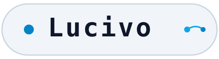

ファイル
ファイルを開く…
フォルダを開く…
同梱サンプル
Visualモードサンプル
記法サンプル
記法サンプル追補版
Markdown を保存
印刷 / PDF として保存…
開く
ファイルを開く…
フォルダを開く…
同梱サンプル
Visualモードサンプル (visual-sample.md)
記法サンプル (notation_sample.md)
記法サンプル追補版 (notation_sample_extra1.md)
保存
Markdown を保存（
untitled.md
）
印刷 / PDF として保存…
Split
Canvas
Code
Canvas
Split（分割）
Canvas（プレビュー）
Code（エディタ）
高速モード
高速
Visualモード
Visual
発表
ステージ発表
ズーミング・マップ
Cobalt
YAML
最新版確認
通信が発生します
矢印・パレット設定…
フローのアニメーション切替
YAML フロントマター切替
Light / Dark 切替
最新版を確認（通信発生）
デザインスタイル:
🎨 パステル図形
📋 2段カード
⭕ 5色サークル
📖 クリームチャート
SOURCE MARKDOWN
閲覧
編集
+ 0ms Test
+ Err Guard
Initializing Studio...
Studio Ready
Diagram Style & Palette
✕
Color Palette
Cobalt Tech
Emerald Matrix
Amber Solar
Royal Violet
Markdown の整形
ファイルを開いたときに整える（見出しの空白・前後の空行・行末の空白・リストの記号・表の列）
今の文書を整える
Expanded Diagram View
Close
キーボードショートカット (Keyboard Shortcuts)
閉じる
通常閲覧画面（エディタ未フォーカス時）
次 / 前の章へスクロール
J
K
]
[
図の拡大・縮小（図の上で）
Ctrl
ホイール
ステージ発表を開始
P
高速 ⇔ Visualモード切替
M
Visual スタイル切替 (1〜4)
1
2
3
4
ショートカット一覧（発表中も有効）
?
モーダルを閉じる
Esc
ステージ発表中
次の項目 / シーンへ進む
→
Space
前のシーンへ戻る
←
Backspace
俯瞰（ライトテーブル）
O
光のポインター
L
幕間 / Q&A 待機幕
B
Q
自動進行 ON / OFF
A
発表テーマ明暗切替
T
先頭 / 末尾シーンへ
Home
End
ステージ発表終了
Esc
ファイルまたはフォルダをドロップして開く
.md / .markdown / .txt またはフォルダ
Notification